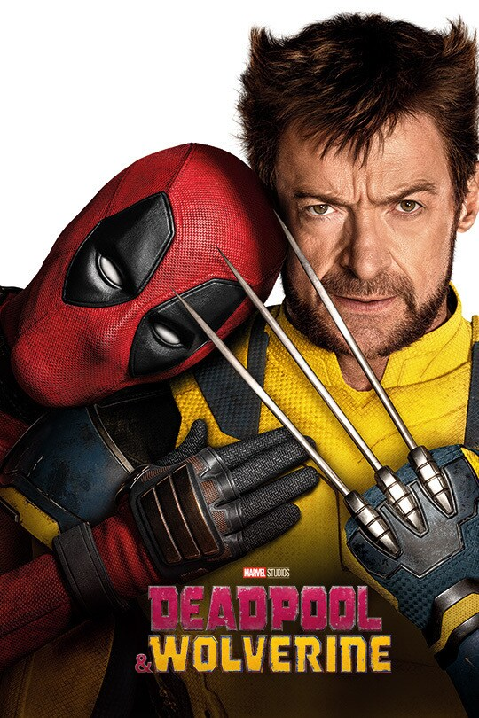
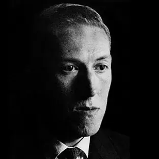
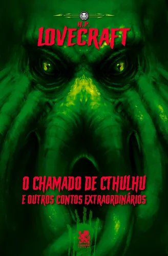

Artistas
Escolha o tipo de obra que deseja
Shawn Levy
um diretor de ampla experiencia e capacidades envejaveis no mundo cinematografico, sendo
o responsavel principal de grandes obras como Stranger Things e Noite nu museu

H.P.Lovecraft

Nascido em 1890, o autor trouxe ao mundo historias que causavam o real sentimento
do que é o medo do desconhecido com suas obras cativantes e intrigantes

Imagin Dragons

Uma banda muito conhecida no mundo musical, composta por quatro individuos
muito talentosos, tendo seu sucesso a partir de 2012, com seu albun Night Vision